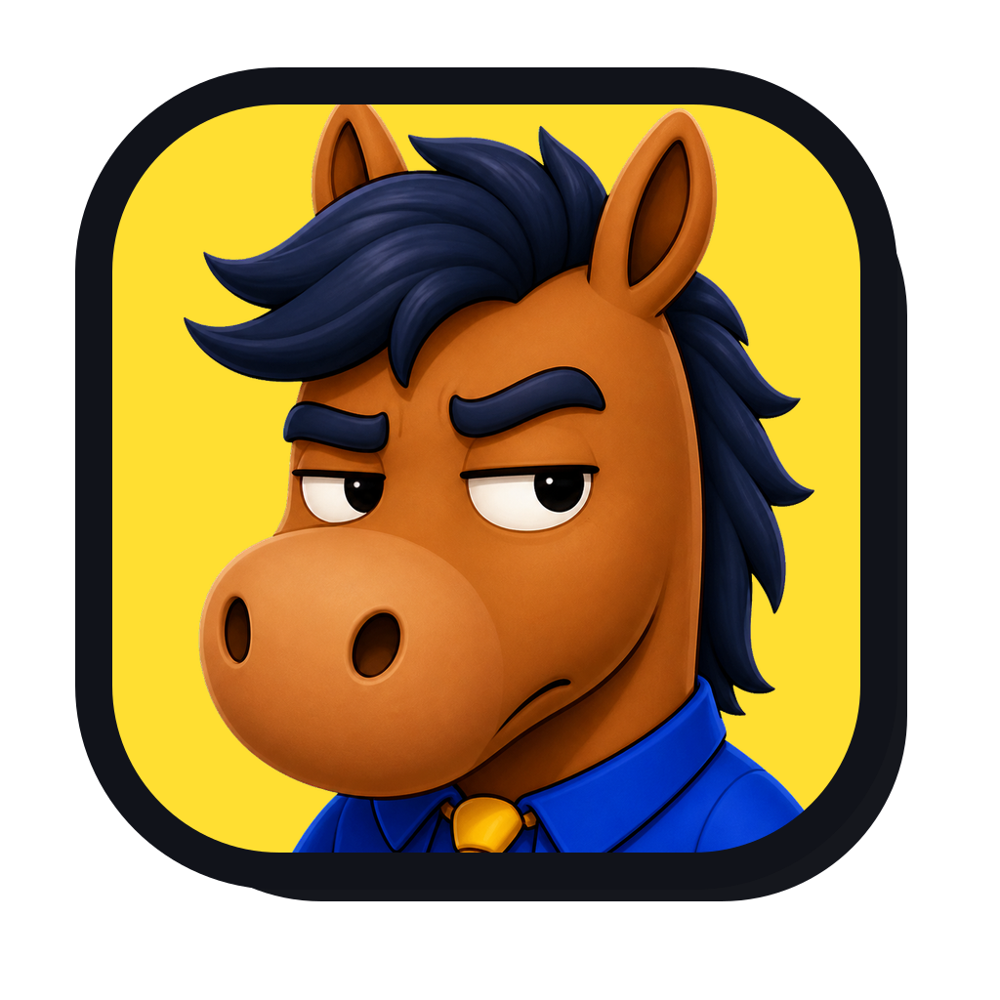
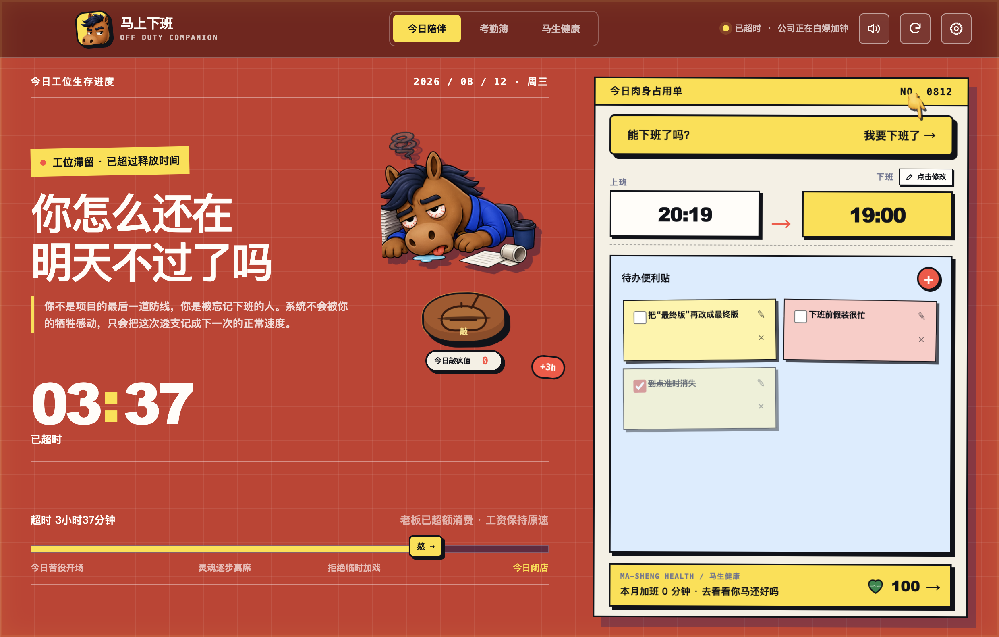
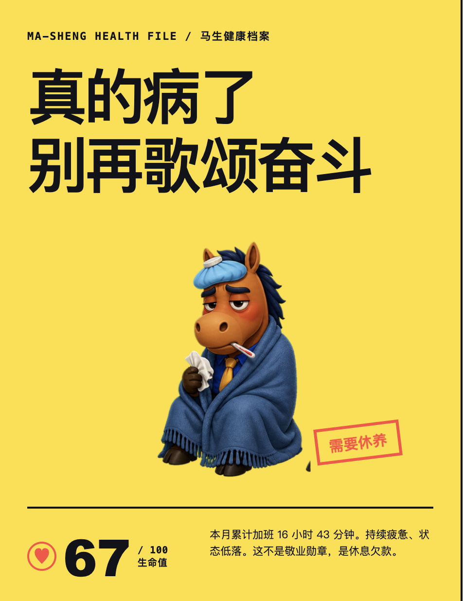
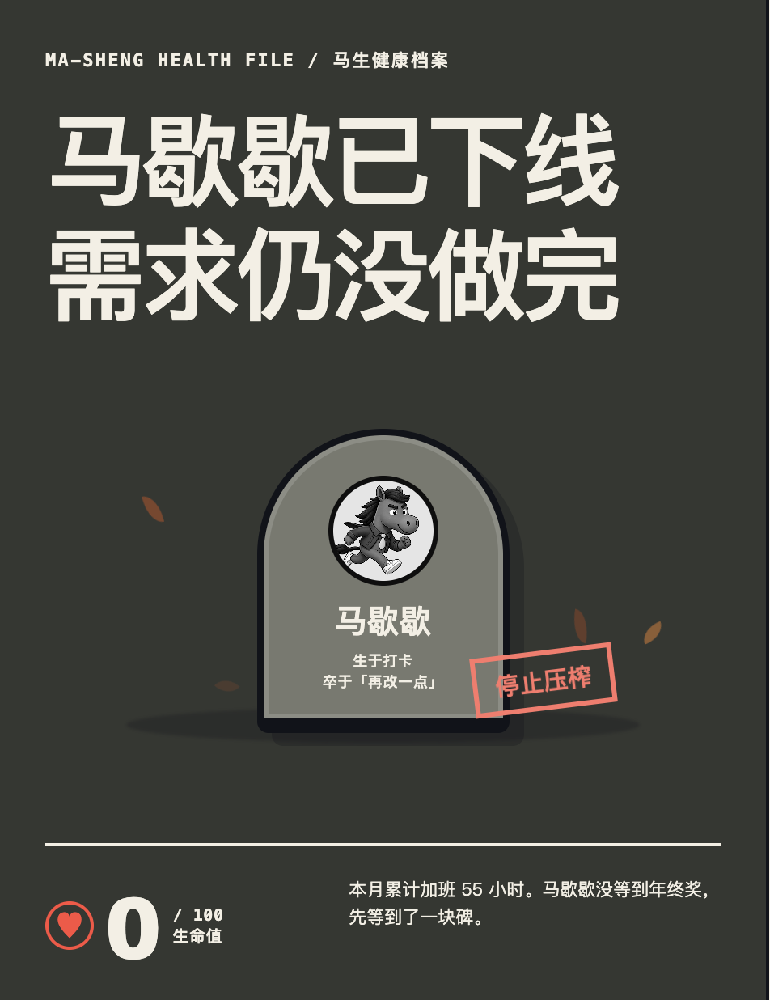
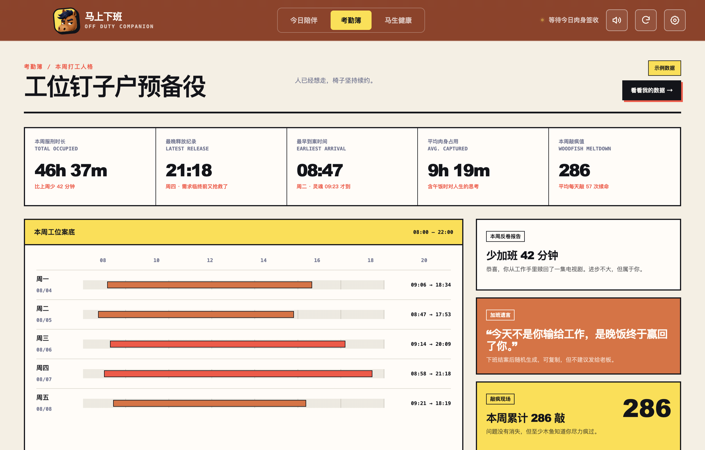

会议静音艺术家
这会再不开完，我就要开花了。

马上下班OFF DUTY COMPANION 立马下载 ↘生活不止打工的待办，还有凉爽的夜晚。

不用反复看钟，也不用打开应用。马歇歇从你到工位起一路陪着，在关键时间主动通知；到了下班点，应用图标还会直接显示倒计时和加班时长。
不用打开应用，关键节点会主动弹出提醒。
这会再不开完，我就要开花了。
发来一个抽象表情包
发来一张图片 · 31 分钟前
你嘴上说“就一会儿”，身体可是一分钟都没忘。从活人微死到病床 ICU，再卷下去，马歇歇没等到年终奖，先等到了一块碑。


雪山、海底、草原与风，
余生不再只有一种答案。
几点被工位捕获，几点终于恢复自由，这里都记着。马歇歇还会根据你的日均工时，自动识别一枚打工人格——不是荣誉，是工伤昵称。

 你都看到这了，
你都看到这了，免费下载 Windows x64 或 macOS Apple 芯片版。不需要账号，考勤只留在你的电脑里——放心，老板看不到你几点跑路。